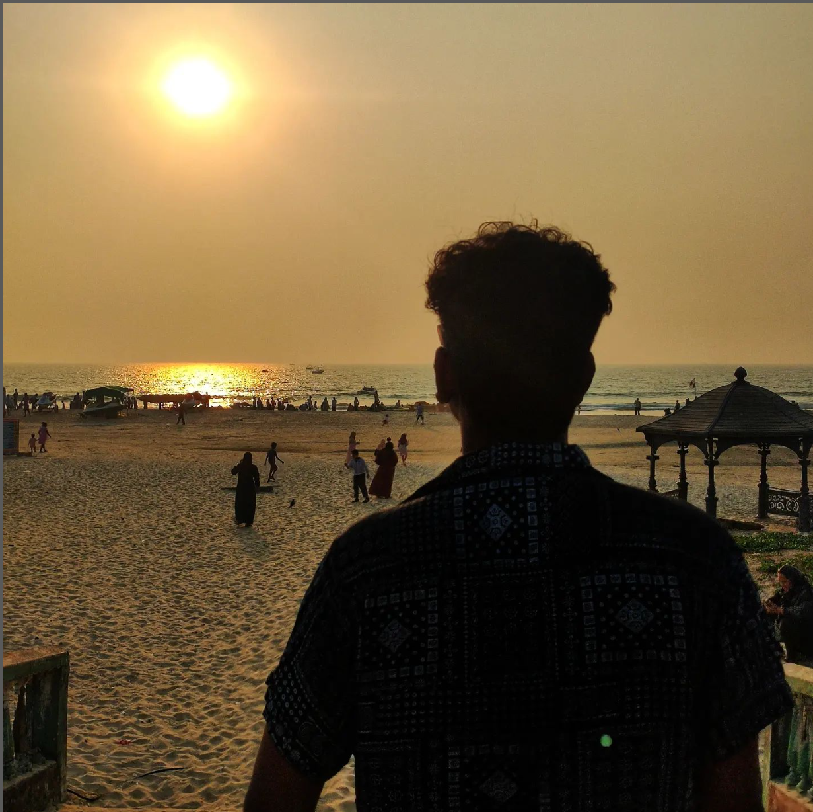

Aman Kumar Thakur

SUMMARY
- A result-oriented team player and skilful in coordinating with development team and problem-solving abilities.Focused & goal driven with strong work ethics and committed to offer quality work.
- 2.6 years of experience in Automation Testing.
- Knowledge on Software Testing Life Cycle (STLC) and System Development Life Cycle (SDLC).
- Experience in Smoke Testing, Functional Testing, Regression Testing and Ad hoc Testing.
- Good Knowledge on Bug Tracking, Bug Verification and Reporting.
- Strong analytical, interpersonal and communication skills.
ACADEMIC QUALIFICATION
Bachelor of Technology in Electronics and Communication Engineering from GURU NANAK INSTITUTIONS with 8.8CGPA.
WORK EXPERIENCE
Worked as Software Engineer Tester(Automation) in VALUE MOMENTUM for 2.6 years.
Projects:(Roles/Responsibilities)
- DMVSystems :
- Worked on Automation of UIs and APIs and integration of both.
- Execute the Testcases in Azure CICD and Provide the results on a daily basis.
- Log Bugs if any Code breaks observed during the executions.
- Co-ordinating with different teams during regression test cycles
- SalesforceCRM :
- Automate the Backlog items and Started In-sprint Automation.
- Execute the Testcases in Azure CICD and Provide the results to the Team.
- Supported in Manual Execution to complete the release items/deliverables on time.
SKILLS
- Languages : Java,C#
- Web Technologies : HTML,CSS,JS,Selenium,APIs
- Applications/Tools:Eclipse,VS Code,Salesforce,SQL
Awards and Certifications
- Awarded Start of the Month for OCtober 2021
- Led a team of 5 and awarded Start of the Quarter(Jan2022-Mar2022)
Other Details: